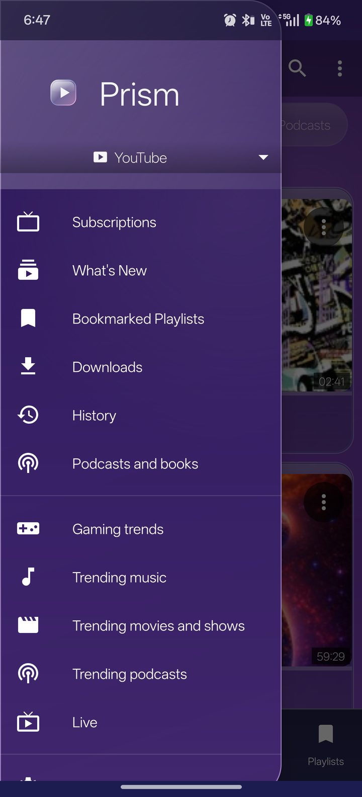
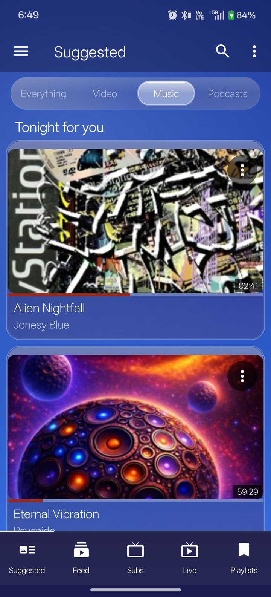
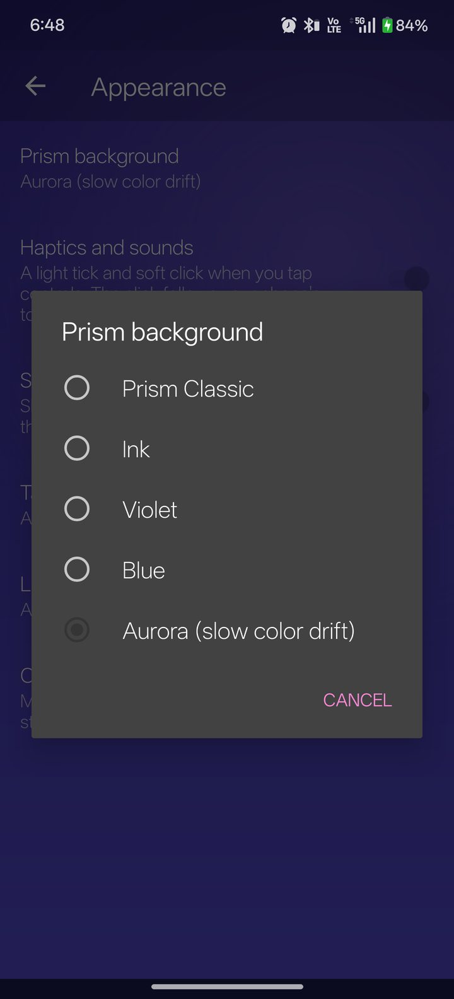
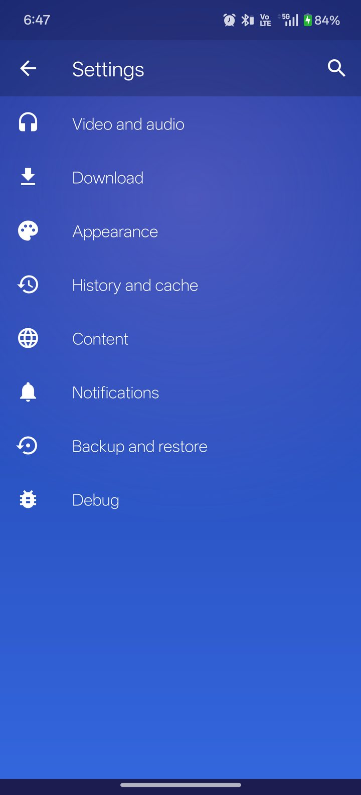

Watch & listen, through glass.
A redesigned YouTube and SoundCloud player built on NewPipe. No ads, no account, no Google services. Video and music each get a look of their own.



Music looks like music.
Video gets a 16:9 feed. Audio gets square cover art, the artist up front and an equaliser on the track that is playing. Flip between them below.
- Square art and a Music tab for SoundCloud and Bandcamp
- Background play with the screen off
- Sleep timer and per-show playback speed
A better way to watch and listen.
A glass interface
Translucent cards, a bottom dock, Everything / Video / Music / Podcasts chips and five backgrounds including a slow Aurora drift.
Many services
YouTube, SoundCloud, PeerTube, Bandcamp and more.
Private by design
No account, no tracking. Subscriptions stay on your device.
Background and offline
Keep audio playing with the screen off, and download for later.
Podcasts and books
A podcasts section, trending music, movies and shows, all in the drawer.
Five moods, one glass.
Prism Classic, Ink, Violet, Blue, or Aurora with a slow colour drift. Pick one in Settings > Appearance.


What Prism Player never does
- No account or sign-in
- No ads
- No analytics or crash reporting
- No Google Play Services
Get Prism Player
- Download the APK from the latest release.
- Allow installs from your browser or file manager when Android asks.
- Open Prism Player. Updates arrive through Obtainium, or re-download here.
Obtainium installs straight from GitHub and updates the app for you. Install it once, then tap below on your device.
Apps that extract from YouTube are not accepted on Google Play, and an F-Droid listing is not planned yet. Use the GitHub APK or Obtainium.
paste-from-releaseScan on your handheld
Prism Player is an independent project built on NewPipe (GPL-3.0). It is not affiliated with or endorsed by YouTube, Google or the NewPipe team.
Free, always. Tips keep it alive.
No ads, no paywall, no tracking. If it made your day nicer, a tip pays for test devices and the time spent on updates. Never required, always appreciated.
Questions
Is it the same as NewPipe?
It shares NewPipe’s engine but has a redesigned interface and extra features. The source is on GitHub under GPL-3.0.
Why isn’t it on Google Play?
Apps that play YouTube outside its official API are not allowed there. GitHub and Obtainium are the supported routes.
Can I log in to my account?
No. Subscriptions and history are stored locally on your device. You can import your subscriptions.
Does it show ads?
No ads, and nothing is tracked.